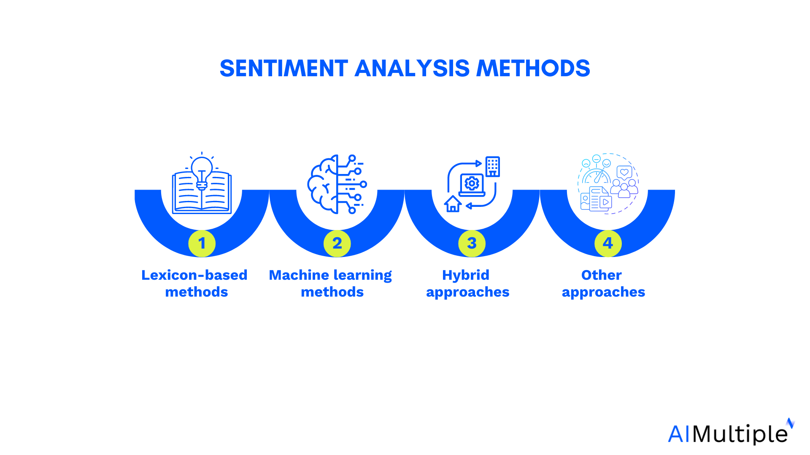
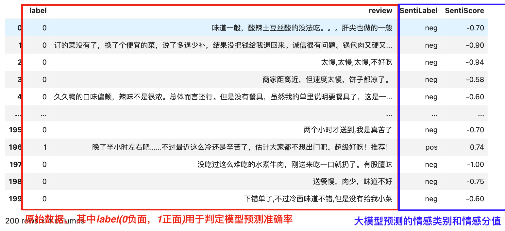
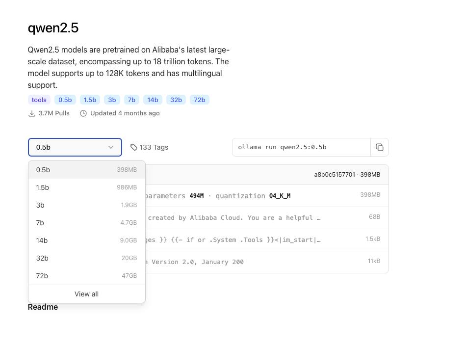
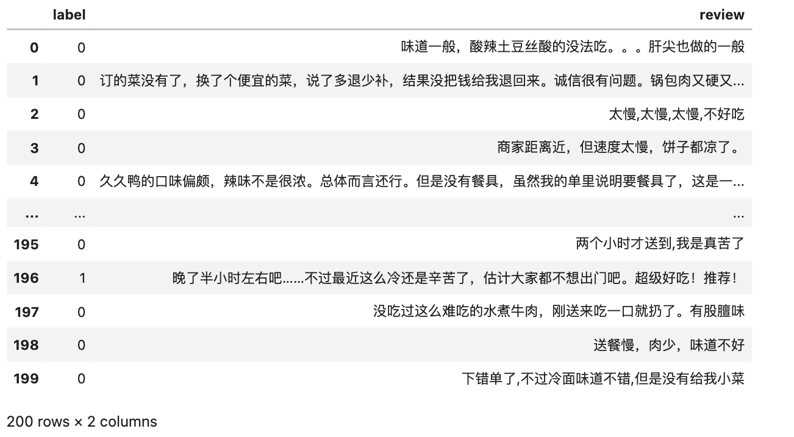
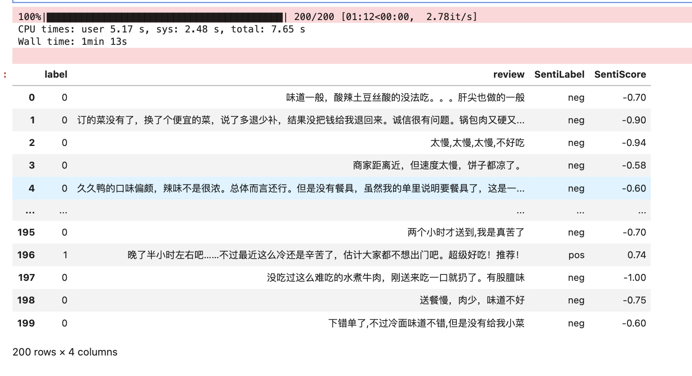

情感分析是分析文本以确定消息的情绪基调是积极、消极还是中性的过程。通过情感分析，我们可以了解文本是否表现出快乐、悲伤、愤怒等情绪。主要的计算方法有语义词典法、机器学习法、混合方法、其他方法。 随着chatGPT这类大语言模型的出现， 它们增强了文本理解能力，使我们能够更精准的把握文本中的语义和情绪，也因此大型语言模型 (LLM) 一出场就有实现情感分析功能。

一、任务描述
大邓准备了200条外卖评论数据(下图蓝色框)， 已进行标注, 其中负面110条，正面90条。
现在想设计一个Prompt， 使用中文大模型对 review 文本进行情感类别(pos/neg)的预测(红色框)， 最终会计算大模型预测的准确率。

先提前剧透一下， 模型预测的准确率87.5%。这种准确率，用到经管社科研究中， 应该没啥问题。
二、传统模式 VS 大语言模型
大语言模型 (LLM) 因其在理解和生成人类语言方面的熟练程度而在情绪分析方面表现出色。通过对各种数据和算法进行训练，LLM 可以检测文本中的细微差别，从而增强其在社交媒体、新闻文章和客户评论等平台上掌握人们情绪和观点的能力。它们捕捉上下文和情感线索的能力提高了情绪分析的准确性和深度。
情感分析领域，传统模式与大语言模型 (LLM) 的比较
- 传统的内容分析方法可能难以准确捕捉细微的情绪。
- LLM 使用深度学习和迁移学习等先进技术，擅长理解不同的语言表达。
- LLM 在跨文本源（包括社交媒体帖子和新闻文章）的情感分析方面具有卓越的准确性和效率。
三、Ollama
Ollama是一款开源应用程序，可让您使用 MacOS、Linux 和 Windows 上的命令行界面在本地运行、创建和共享大型语言模型。
Ollama 可以直接从其库中访问各种 LLM，只需一个命令即可下载。下载后，只需执行一个命令即可开始使用。这对于工作量围绕终端窗口的用户非常有帮助。Ollama的安装、配置、使用的详细教程可阅读 教程 | 如何使用 Ollama 下载 & 使用本地大语言模型
3.1 安装模型
假设电脑中已安装了Ollama软件，
- qwen： 阿里的通义千问大模型， 主要适用于中文场景， 英文也可。
- llama：Meta发布的LLama大模型，主要适用于英文场景， 中文也可。
- deepseek： 幻方量化的DeepSeek模型，适用于中英文场景。

本文实验对象为中文内容(中文外卖在线评论）， 之前我尝试过deepseek感觉运行速度较慢， 本文选择 qwen (最新的模型是qwen2.5), 我们尝试一次性安装多个模型， 测试运行速度和任务完成的准确率。
ollama run qwen2.5:0.5b
ollama run qwen2.5:1.5b
ollama run qwen2.5:3b
ollama run qwen2.5:7b
3.2 安装python包
打开电脑命令行cmd(mac是terminal), 网络是连网状态，执行安装命令
pip3 install ollama
pip3 install instructor
3.3 启动ollama服务
在电脑中找到软件Ollama， 双击打开，即可开启Ollama服务。
四、实验
4.1 代码结构
project
- code.ipynb #代码
- data.csv #在线评论数据
- qwen2.5-0.5b-result.csv #qwen2.5:0.5b预测结果
- qwen2.5-1.5b-result.csv #qwen2.5:1.5预测结果
- qwen2.5-3b-result.csv #qwen2.5:3b预测结果
- qwen2.5-7b-result.csv #qwen2.5:7b预测结果
- async-qwen2.5-7b-result.csv #qwen2.5:7b异步代码预测结果
4.2 读取数据
data.csv 内存储着200条外卖评论，均已标注(label字段，其中1为正面， 0为负面)
import pandas as pd
df = pd.read_csv('data.csv')
df

字段的数据类型
df.dtypes
Run
label int64
review object
dtype: object
label数值的分布
df.label.value_counts()
Run
label
0 110
1 90
Name: count, dtype: int64
4.3 设计提示Promp
需要根据单词，生成单词、音标、语义、例句、历史文化、相关单词等信息， 提示如下，
PROMPT_TEXT = "根据评论内容，返回文本的情感类别(pos、neg、neo)和对应的情感得分(取值范围0~1)""
注意: PROMPT_TEXT会影响模型表现， 大邓设计的非常粗糙， 建议大家可以设计DIY自己PROMPT_TEXT。
4.4 小实验
使用参考推文 实验 | 如何使 Ollama 结构化输出 JSON 样式的结果 ，可确保情感分析的结果为指定格式。
%%time
from openai import OpenAI
from pydantic import BaseModel
from typing import List
import os
import instructor
#结构化输出
class Sentiment(BaseModel):
senti_label: str
senti_score: float
#Prompt提示
PROMPT_TEXT = "根据评论内容，返回文本的情感类别(pos、neg、neo)和对应的情感得分(取值范围0~1)"
#实验数据
COMMENT_CONTENT = '11点14订餐，13点20饭才到，2个小时才把我的午饭送到，而且还是打了2次客服电话，1次投诉电话才给送来，要是不打电话都不知道几点能吃上午饭？'
client = instructor.from_openai(
OpenAI(
base_url="http://localhost:11434/v1",
api_key="NA", # required, but unused
),
mode = instructor.Mode.JSON,
)
resp = client.chat.completions.create(
model = "qwen2.5:7b",
messages=[
{"role": "system", "content": PROMPT_TEXT}, #提示PROMP
{"role": "user", "content": COMMENT_CONTENT} #评论文本
],
response_model = Sentiment,
max_retries = 3
)
print(resp.model_dump_json(indent=2))
Run
{
"senti_label": "neg",
"senti_score": -0.65
}
CPU times: user 44.4 ms, sys: 6.46 ms, total: 50.8 ms
Wall time: 1 s
运行一条评论耗时 1 s， 该评论为 负面neg, 情感分 -0.65。
五、 完整代码
由于大模型速度非常缓慢，一次提问耗时几秒， 如果大规模使用大模型对数据进行数据标注， 速度慢的令人抓狂。 这时候写代码就有同步代码和异步代码之分。
- 同步代码 按照顺序执行，每个任务必须等待前一个任务完成后才能开始。适用于处理少量数据或不需要高并发性能的情况。
- 异步代码 允许并发执行多个任务，适合处理大量数据时提高效率。使用
asyncio库来实现异步操作。
本章节是情感分析实验代码的收官章节， 设计了 同步代码 和 异步代码 两个版本， 并在本章末进行了任务耗时(速度)对比。
5.1 同步代码
%%time
import pandas as pd
from tqdm import tqdm
from openai import OpenAI
from pydantic import BaseModel
from typing import List
import os
import instructor
#结构化输出
class Sentiment(BaseModel):
senti_label: str
senti_score: float
#Prompt提示
PROMPT_TEXT = "根据评论内容，返回文本的情感类别(pos、neg)和情感得分(取值范围 -1~1)"
client = instructor.from_openai(
OpenAI(
base_url="http://localhost:11434/v1",
api_key="NA", # required, but unused
),
mode = instructor.Mode.JSON,
)
labels = []
scores = []
#读取数据
df = pd.read_csv('data.csv')
for review in tqdm(df['review']):
try:
resp = client.chat.completions.create(
model = 'qwen2.5:7b', #选择模型。 0.5b、1.5b、3b、7b等
messages=[
{"role": "system", "content": PROMPT_TEXT}, #提示
{"role": "user", "content": review} #评论文本
],
response_model = Sentiment,
max_retries = 3
)
labels.append(resp.senti_label)
scores.append(resp.senti_score)
except:
labels.append('NA')
scores.append('NA')
df['SentiLabel'] = labels
df['SentiScore'] = scores
#保存结果
df.to_csv('qwen2.5-7b-result.csv', index=False)
df

5.2 异步代码
相比 5.1普通代码 ， 异步代码运行速度更快。
import pandas as pd
from tqdm.asyncio import tqdm_asyncio
# 使用AsyncOpenAI代替OpenAI以支持异步操作
from openai import AsyncOpenAI
from pydantic import BaseModel
from typing import List
import numpy as np
import os
import instructor
import asyncio
# 结构化输出
class Sentiment(BaseModel):
senti_label: str
senti_score: float
# Prompt提示
PROMPT_TEXT = "根据评论内容，返回文本的情感类别(pos、neg)和情感得分(取值范围 -1~1)"
client = instructor.from_openai(
AsyncOpenAI(
base_url="http://localhost:11434/v1",
api_key="NA", # required, but unused
),
mode=instructor.Mode.JSON,
)
async def analyze_review(review):
try:
resp = await client.chat.completions.create(
model='qwen2.5:7b', # 选择模型。 3b、7b等
messages=[
{"role": "system", "content": PROMPT_TEXT}, # 提示
{"role": "user", "content": review} # 评论文本
],
response_model=Sentiment,
max_retries=3 # 最大(失败）的重试次数。
)
return resp.senti_label, resp.senti_score
except Exception as e:
print(f"Error processing review: {e}")
return 'NA', np.nan
async def main():
# 读取数据
df = pd.read_csv('data.csv')
tasks = [analyze_review(review) for review in df['review']]
results = await tqdm_asyncio.gather(*tasks)
labels, scores = zip(*results)
df['SentiLabel'] = labels
df['SentiScore'] = scores
# 保存结果
df.to_csv('async-qwen2.5-7b-result.csv', index=False)
# 检查是否已经在运行的事件循环中
try:
asyncio.get_running_loop()
# 如果在交互模式下运行，直接调度main()而不使用asyncio.run
asyncio.create_task(main())
except RuntimeError:
# 如果没有正在运行的事件循环，使用asyncio.run(main())
asyncio.run(main())
5.3 速度对比
以qwen2.5:7b为例， 对本文 data.csv 在线评论数据进行情感分析，
- 普通代码 运行耗时 160 秒
- 异步代码 运行耗时 90 秒
六、评价模型
本文分别对0.5b、1.5b、3b、7b进行实验， 记录了200条外卖评论的任务耗时(以同步代码为例）和准确率， 结果如下
| 模型 | 模型参数 | 任务耗时(秒) | 准确率 |
| ----- | ------ | -------- | ----- |
|qwen2.5| 0.5b | 260s | 1.5% |
|qwen2.5| 1.5b | 48.5s | 58.5% |
|qwen2.5| 3b | 140s | 86% |
|qwen2.5| 7b | 160s | 87.5% |
综合任务耗时和准确率， 建议使用 qwen2.5:3b 和 qwen2.5:7b 。如果电脑性能很好，直接上 qwen2.5:7b 甚至更大参数的模型。
Tips:准确率计算方法
假设label为1时， SentiLabel 为pos(或label为0时， SentiLabel为neg)， 大模型判断正确。反之，判断失误。
expression = "(label == 1) & (sentiment == 'pos') | (label == 0) & (sentiment == 'neg')"
correct_ratio = len(df.query(expression))/ len(df)
print(f'准确率: {correct_ratio*100}%')
Run
准确率: 86%
七、获取代码
相关内容
- 文献 | GPT 是多语言心理文本分析的有效工具
- 教程 | 如何使用 Ollama 下载 & 使用本地大语言模型
- 实验 | 如何使 Ollama 结构化输出 JSON 样式的结果
- 推荐 | 文本分析库cntext2.x使用手册
- 实验 | 使用本地大模型从文本中提取结构化信息
- 实验 | 使用Ollama本地大模型DIY制作单词书教案PDF
- 实验 | 使用 Crewai 和 Ollama 构建智能体(AI Agent)帮我撰写博客文章